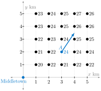
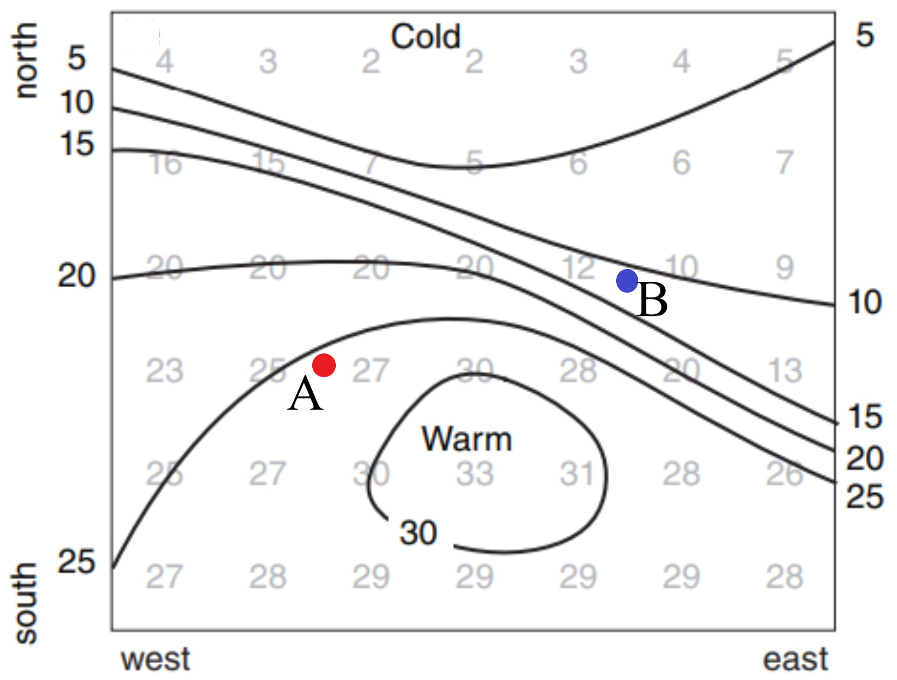
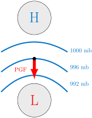
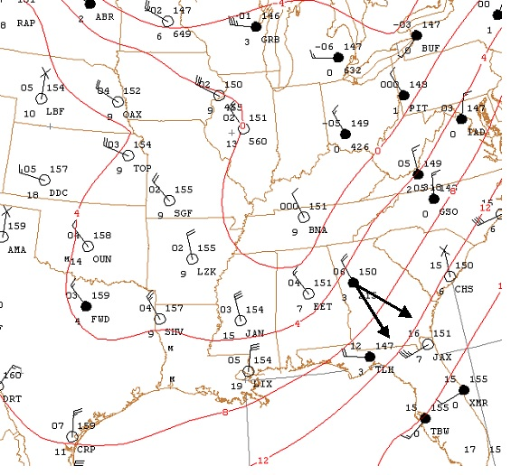

What is the gradient of a function and what does it tell us?
How is gradient related to advection?
The partial derivatives of a function \(f(x,y)\) tell us the rate of change of \(f\) in the directions parallel to the coordinate axes. Oftentimes, however, we wish to measure the rate of change in some other direction (such as in the direction of the steepest increase of the function, for example). The gradient vector will be our tool to accomplish this task.
Definition5.2.1.The Gradient Vector.
The gradient vector of a differentiable function \(f(x,y)\) at a point \((a,b)\text{,}\) denoted \(\nabla f (a,b)\text{,}\) is defined by
Example5.2.2.Temperature Gradient near Middletown.
Temperatures \(T\) (in \(^{\circ}C\)) at locations \(x\) km east and \(y\) km north of Middletown are shown in Figure 5.2.3.

Figure5.2.3.Temperatures near Middletown (in \(^{\circ}C\)).
We estimate \(\frac{\partial T}{\partial x}(A)\) by looking at information to the left and to the right of \(A\text{.}\) So, \(\frac{\partial T}{\partial x}(A) \approx \frac{(24-22)^{\circ}C}{(4-2)km} = 1 \frac{^{\circ}C}{km}\text{.}\) Similarly, \(\frac{\partial T}{\partial y}(A) \approx \frac{(24-21)^{\circ}C}{(3-1)km} = 1.5 \frac{^{\circ}C}{km}\text{.}\) The gradient at \(A\text{,}\) the vector represented by the arrow in Figure 5.2.3, can then be written as
Figure 5.2.5 gives a contour plot of temperature \(T(x,y)\) (in \(^{\circ}C\)).

Figure5.2.5.A contour plot of temperature \(T\) used in Checkpoint 5.2.4.
Sketch \(\nabla T(A)\) and \(\nabla T(B)\text{.}\)
Is \(\| \nabla T(A) \|\) or \(\| \nabla T(B) \|\) larger?
Suppose the horizontal wind vector on this entire region is \(\vec{v}_H = (15 \ km/hr)\vec{i}\text{.}\) You should also recall that advection is \(-\vec{v}_H \cdot \nabla T_H\text{.}\) Is the temperature advection at \(A\) positive, negative, or zero?
Is the temperature advection at \(B\) positive, negative, or zero?
Answer.
The gradient vector at \(A\) would be an arrow pointing generally SE that is roughly perpendicular to the contour labeled 25. The gradient vector at \(B\) would be an arrow pointing generally SSW that is roughly perpendicular to the contour labeled 10.
\(\| \nabla T(B) \|\) is larger (the change in temperature is greater as evidenced by the contour lines being closer near \(B\text{.}\)
Since \(\vec{v}_H\) and \(\nabla T_H\) both point in the same direction, advection is negative at \(A\) since \(-\vec{v}_H(A) \cdot \nabla T_H(A) < 0\text{.}\)
Positive.
The pressure gradient force is that force which attempts to equalize pressure differences (causing high pressure to push air toward low pressure). Air would always flow from high to low pressure if the pressure gradient force was the only force acting on it. Though it is a fundamental force, other forces such as gravity and the Coriolis force also impact how air flows.
Definition5.2.6.Pressure Gradient Force.
The Pressure Gradient Force (PGF) is a vector that is perpendicular to isobars and points in the direction of the negative pressure gradient. Its magnitude is proportional to the distance between isobars (i.e. \(\Delta p / \Delta d\)).

Figure5.2.7.The pressure gradient force is perpendicular to isobars and points towards lower pressure.
This means, if \(p(x,y)\) represents the pressure at location \((x,y)\text{,}\) the PGF vector at that point has
In short, \(\vec{PGF}(x,y) = -\frac{m}{\rho} \cdot \nabla p(x,y)\) where \(m\) is a mass of a parcel of air (measured in \(kg\)) and \(\rho\) is a density of air (measured in \(kg/m^3\)).
How do various forces (vectors) work together at the earth’s surface? Figure 5.2.8 illustrates the net result of summing the forces due to the pressure gradient force, the Coriolis force, and the force due to friction. Here, collected weather data gives isotherms (the horizontal black lines) and isobars (the dashed circles). If the winds are represented by the blue vectors, then they are the sum of PGF vectors which are perpendicular to the isobars and pointing to lower pressure, Coriolis force vectors perpendicular and to the right of the wind , and friction force vectors opposite the wind.
Figure 5.2.9 is a contour map showing dew point temperatures \(T(x,y)\) (in degrees Fahrenheit) at various locations of the United States. Here, \(x\) represents degrees longitude east of the prime meridian and \(y\) represents degrees latitude north of the equator.
Las Vegas, NV is located at approximately \(36.17^{\circ}\) N latitude and \(-115.14^{\circ}\) E longitude. Compute \(T(-115.14,36.17)\text{.}\) Interpret the meaning with a sentence.
Is \(\frac{\partial T}{\partial y}(-115.14,36.17)\) positive, negative, or zero? Explain. What are the units of \(\frac{\partial T}{\partial y}\text{?}\)
Which direction best estimates that of \(\nabla T(-115.14,36.17)\text{?}\) Explain.
\(\displaystyle \vec{i} + \vec{j}\)
\(\displaystyle \vec{i} - \vec{j}\)
\(\displaystyle -\vec{i} + \vec{j}\)
\(\displaystyle -\vec{i} - \vec{j}\)
\(\displaystyle \vec{k}\)
By naming a city, give a location for which \(\nabla T(x_0,y_0)=0\vec{i}+0\vec{j}\text{.}\) Defend your choice of location.
Answer.
\(T(-115.14,36.17) \approx 30^{\circ}F\text{.}\) This tells us that the dew point temperature at Las Vegas, NV is roughly \(30^{\circ}F\text{.}\)
\(\frac{\partial T}{\partial y}(-115.14,36.17)\) is negative. This is because as we move north from Las Vegas, NV, the dewpoint temperature decreases. The units of \(\frac{\partial T}{\partial y}\) are degrees Fahrenheit per degree latitude.
iv. The direction in which the dewpoint increases the most rapidly is to the SW.
Answers will vary. Atlanta would be a reasonably good answer. Anything in Georgia or the panhandle of Florida are reasonable responses. So too would be cities in North Dakota (North Dakota has cities?).
7.Advection in Georgia.
Determine the temperature advection at the specified location in Georgia on the surface chart in Figure 5.2.10. This is a data plot from 850mb with isotherms superimposed. The wind \(\vec{u}\text{,}\) as illustrated, has speed 20 knots from a mathematical angle of \(-55^{\circ}\text{.}\) The temperature gradient, \(\nabla T\) has a magnitude of \(0.030 \frac{^\circ C}{nm}\) at a mathematical angle of \(-35^{\circ}\text{.}\) [Note: \(nm\) denotes nautical miles.]

Figure5.2.10.Determining temperature advection somewhere in Georgia.
Moisture advection is horizontal transport of moisture, which plays a very important role in the development of precipitation. The advection of dew point itself can be thought as moisture advection:
Here \(\vec{v}_H\) is the horizontal wind vector and \(T_d(x,y)\) represents the dewpoint temperature at location \((x,y)\text{.}\)Figure 5.2.11 shows current dewpoint temperatures observed near St. Cloud, MN. Suppose the horizontal wind vector (with units of m/s) is \(\vec{v}_H = 8\vec{i} +4 \vec{j}.\) Estimate the moisture advection at St. Cloud. Be sure to include units in your response. Then, interpret the meaning of this value.
Figure5.2.11.Dewpoint temperatures near St. Cloud, MN. St. Stephen is 23 km north of St. Cloud. Clearwater is 20 km south of St. Cloud. St. Joseph is 13 km west of St. Cloud. Duelm is 21 km east of St. Cloud.